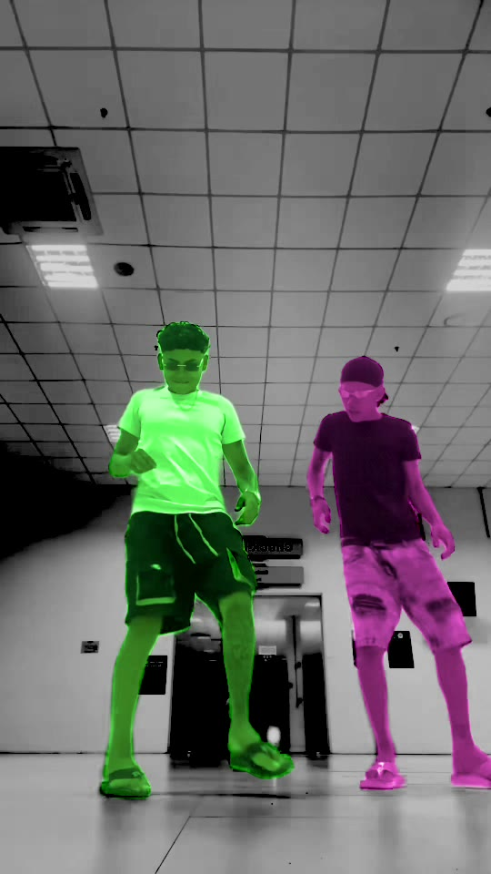

Step 1 Find everyone
Every person, their own mask
Before anything is replaced, the app works out who is in the clip and keeps each person apart, shot after shot.
Clip
→

Two people foundIdentities
Person 160% of the screen time
Person 240% of the screen time
- Shot cuts are found where the whole frame jumps: Vision's feature print or the color histogram.
- Each person is Vision's person instance joined with its accurate matte, so patterned shirts get no holes and a headrest is never a person.
- The same person across cuts is matched by the colors inside their mask. Two people seen in one frame can never merge.
- Who to replace: the person with the most screen time, everyone, or anyone you click.
VisionGPUOn your Mac · free
 Swapjutsu
Swapjutsu